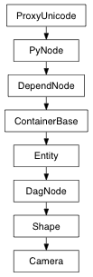

pymel.core.nodetypes.Camera¶

- class Camera(*args, **kwargs)¶
class counterpart of mel function camera
Create, edit, or query a camera with the specified properties. The resulting camera can be repositioned using the viewPlace command. Many of the camera settings only affect the resulting rendered image. E.g. the F/Stop, shutter speed, the film related options, etc. Scaling the camera icon does not change any camera properties.
- FilmFit = Enum( EnumValue('FilmFit', 0, 'fillFilmFit'), EnumValue('FilmFit', 1, 'horizontalFilmFit'), EnumValue('FilmFit', 2, 'verticalFilmFit'), EnumValue('FilmFit', 3, 'overscanFilmFit'), EnumValue('FilmFit', 4, 'invalid'))¶
- RollOrder = Enum( EnumValue('RollOrder', 0, 'rotateTranslate'), EnumValue('RollOrder', 1, 'translateRotate'))¶
- addBookmark(bookmark=None)¶
- applyBookmark(bookmark)¶
- computeDepthOfField()¶
- Returns: Status code Status Codes: MS::kSuccess The method was successful MS::kFailure An object error has occurred
Derived from api method maya.OpenMaya.MFnCamera.computeDepthOfField
Undo is not currently supported for this method
- copyViewFrom(otherCamera)¶
Copy the camera settings related to the perspective from the given camera view.
Parameters: - otherCamera : PyNode
Camera to copy view from
Derived from api method maya.OpenMaya.MFnCamera.copyViewFrom
Undo is not currently supported for this method
- dolly(distance, relative=True)¶
The dolly command moves a camera along the viewing direction in the world space. The viewing-direction and up-direction of the camera are not altered. There are two modes of operation: Relative mode: for a perspective camera, the camera is moved along its viewing direction, and the distance of travel is computed with respect to the current position of the camera in the world space. In relative mode, when the camera is moved, its COI is moved along with it, and is kept at the same distance, in front of the camera, as before applying the dolly operation. For orthographic camera, the viewing width of the camera is changed by scaling its ortho width by the new value specified on the command line. Absolute mode: for a perspective camera, the camera is moved along its viewing direction, to the distance that is computed with respect to the current position of the world center of interest (COI) of the camera. In the absolute mode, when the camera is moved, the COI of the camera is not moved with the camera, but it is fixed at its current location in space. For orthographic camera, the viewing width of the camera is changed by replacing its ortho width with the new value specified on the command line. This command may be applied to more than one cameras; objects that are not cameras are ignored. When no camera name supplied on the command line, this command is applied to all currently active cameras. The dolly command can be applied to either a perspective or an orthographic camera.
Flags:
Long Name / Short Name Argument Types Properties absolute / abs bool 
This flag modifies the behavior of the distance and orthoScale flags. When used in conjunction with the distance flag, the distance argument specifies how far the camera’s eye point should be set from the camera’s center of interest. When used with the orthoScale flag, the orthoScale argument specifies the camera’s new ortho width.
distance / d float
- Unit distance to dolly a perspective camera.
dollyTowardsCenter / dtc bool
This flag controls whether the dolly is performed towards the center of the view (if true), or towards the point where the user clicks (if false). By default, dollyTowardsCenter is on. Flag can have multiple arguments, passed either as a tuple or a list.
orthoScale / os float
- Scale to change the ortho width of an orthographic camera.
relative / rel bool
This flag modifies the behavior of the distance and orthoScale flags. When used in conjunction with the distance flag, the camera eye and center of interest are both moved by the amount specified by the distance flag’s argument. When used with the orthoScale flag, the orthoScale argument is used multiply the camera’s ortho width.By default the relative flag is always on.
Derived from mel command maya.cmds.dolly
Example:
import pymel.core as pm pm.camera() # Result: [nt.Transform(u'camera1'), nt.Camera(u'cameraShape1')] # # Moves the persp camera forward through its center of interest pm.dolly( 'persp', abs=True, d=-3 ) # Move the persp camera and its center of interest. pm.dolly( 'persp', d=-3 ) # Changes the ortho-width of the top camera to 7.5 pm.dolly( 'top', abs=True, os=7.5 ) # Scale the ortho-width of the top camera by a quarter from its current value. pm.dolly( 'top', os=0.25 )
- getAspectRatio()¶
Returns the aspect ratio for the camera.
Return type: float Derived from api method maya.OpenMaya.MFnCamera.aspectRatio
- getAspectRatioLimits()¶
Returns the minimum and maximum aspect ratio limits for the camera.
Return type: (float, float) Derived from api method maya.OpenMaya.MFnCamera.getAspectRatioLimits
- getCameraScale()¶
Returns the camera scale.
Return type: float Derived from api method maya.OpenMaya.MFnCamera.cameraScale
- getCenterOfInterest()¶
Return the linear distance from the camera’s eye point to the center of interest.
Return type: float Derived from api method maya.OpenMaya.MFnCamera.centerOfInterest
- getCenterOfInterestPoint(space='preTransform')¶
Returns the center of interest point for the camera.
Parameters: - space : Space.Space
Specifies the coordinate system for this operation
values: ‘transform’, ‘preTransform’, ‘object’, ‘world’
Return type: Point
Derived from api method maya.OpenMaya.MSpace.centerOfInterestPoint
- getDisplayFieldChart(**kwargs)¶
Activate display of the video field chart when looking through the camera.
Derived from mel command maya.cmds.camera
- getDisplayFilmOrigin(**kwargs)¶
Activate the display of the film origin guide when looking through the camera.
Derived from mel command maya.cmds.camera
- getDisplayFilmPivot(**kwargs)¶
Activate display of the film pivot guide when looking through the camera.
Derived from mel command maya.cmds.camera
- getDisplayGateMask(**kwargs)¶
Display the gate mask, file or resolution, as a shaded area to the edge of the viewport.
Derived from mel command maya.cmds.camera
- getDisplayResolution(**kwargs)¶
Activate display of the current rendering resolution (as defined in the render globals) when looking through the camera.
Derived from mel command maya.cmds.camera
- getDisplaySafeAction(**kwargs)¶
Activate display of the video Safe Action guide when looking through the camera.
Derived from mel command maya.cmds.camera
- getDisplaySafeTitle(**kwargs)¶
Activate display of the video Safe Title guide when looking through the camera.
Derived from mel command maya.cmds.camera
- getEyePoint(space='preTransform')¶
Returns the eye point for the camera.
Parameters: - space : Space.Space
Specifies the coordinate system for this operation
values: ‘transform’, ‘preTransform’, ‘object’, ‘world’
Return type: Point
Derived from api method maya.OpenMaya.MSpace.eyePoint
- getFStop()¶
Returns the f-stop value for the camera.
Return type: float Derived from api method maya.OpenMaya.MFnCamera.fStop
- getFarClipPlane()¶
Returns the distance to the far clipping plane.
Return type: float Derived from api method maya.OpenMaya.MFnCamera.farClippingPlane
- getFarFocusDistance()¶
Returns the linear distance to the far focus plane.
Return type: float Derived from api method maya.OpenMaya.MFnCamera.farFocusDistance
- getFilmApertureLimits()¶
Returns the maximum and minimum film aperture limits for the camera.
Return type: (float, float) Derived from api method maya.OpenMaya.MFnCamera.getFilmApertureLimits
- getFilmFit()¶
Returns how the digital image is being fitted to the film back.
Return type: Camera.FilmFit Derived from api method maya.OpenMaya.MFnCamera.filmFit
- getFilmFitOffset()¶
Returns the film fit offset for the camera.
Return type: float Derived from api method maya.OpenMaya.MFnCamera.filmFitOffset
- getFilmFrustum(distance, applyPanZoom=False)¶
Returns the film frustum for the camera. The frustum defines the projective transformation.
Parameters: - distance : float
Specifies the focal length
- applyPanZoom : bool
specifies whether to apply 2D pan/zoom
Return type: (float, float, float, float)
Derived from api method maya.OpenMaya.MFnCamera.getFilmFrustum
- getFilmRollOrder()¶
Returns the current roll order
Return type: Camera.RollOrder Derived from api method maya.OpenMaya.MFnCamera.filmRollOrder
- getFilmRollValue()¶
Returns the current roll value in angular units.
Return type: float Derived from api method maya.OpenMaya.MFnCamera.filmRollValue
- getFilmTranslateH()¶
Returns the horizontal film translate value. This value corresponds to the normalized viewport.
Return type: float Derived from api method maya.OpenMaya.MFnCamera.filmTranslateH
- getFilmTranslateV()¶
Returns the vertical film translate value. This value corresponds to the normalized viewport, [-1,1].
Return type: float Derived from api method maya.OpenMaya.MFnCamera.filmTranslateV
- getFocalLength()¶
Returns the focal length for the camera.
Return type: float Derived from api method maya.OpenMaya.MFnCamera.focalLength
- getFocalLengthLimits()¶
Returns the focal length limits for the camera.
Return type: (float, float) Derived from api method maya.OpenMaya.MFnCamera.getFocalLengthLimits
- getFocusDistance()¶
Returns the focus distance for the camera. This value sets the focus at a certain distance in front of the camera.
Return type: float Derived from api method maya.OpenMaya.MFnCamera.focusDistance
- getHomeCommand(**kwargs)¶
Specify the command to execute when viewSet -homeis applied to this camera. All occurances of %camerawill be replaced with the cameras name before viewSet runs the command.
Derived from mel command maya.cmds.camera
- getHorizontalFieldOfView()¶
Returns the horizontal field of view for the camera.
Return type: float Derived from api method maya.OpenMaya.MFnCamera.horizontalFieldOfView
- getHorizontalFilmAperture()¶
Returns the horizontal film aperture for the camera.
Return type: float Derived from api method maya.OpenMaya.MFnCamera.horizontalFilmAperture
- getHorizontalFilmOffset()¶
Returns the horizontal offset of the film. Unit used is inches.
Return type: float Derived from api method maya.OpenMaya.MFnCamera.horizontalFilmOffset
- getHorizontalPan()¶
Return the camera 2D horizontal pan value. Unit is inches.
Return type: float Derived from api method maya.OpenMaya.MFnCamera.horizontalPan
- getHorizontalRollPivot()¶
Returns the current horizontal roll pivot value.
Return type: float Derived from api method maya.OpenMaya.MFnCamera.horizontalRollPivot
- getHorizontalShake()¶
Returns the horizontal offset of the film due to the shake attribute. Unit used is inches. This horizontal/vertical attribute pair acts identically to the film offset pair, but gives another point of input to that system. This allows film-based camera shake to be accessed conveniently and independently without disturbing any other film-offsetting techniques.
Return type: float Derived from api method maya.OpenMaya.MFnCamera.horizontalShake
- getJournalCommand(**kwargs)¶
Journal interactive camera commands. Commands can be undone when a camera is journaled.
Derived from mel command maya.cmds.camera
- getLensSqueezeRatio()¶
Returns the lens squeeze ratio for the camera.
Return type: float Derived from api method maya.OpenMaya.MFnCamera.lensSqueezeRatio
- getNearClipPlane()¶
Returns the distance to the near clipping plane.
Return type: float Derived from api method maya.OpenMaya.MFnCamera.nearClippingPlane
- getNearFocusDistance()¶
Returns the linear distance to the near focus plane.
Return type: float Derived from api method maya.OpenMaya.MFnCamera.nearFocusDistance
- getOrthoWidth()¶
Returns the orthographic projection width.
Return type: float Derived from api method maya.OpenMaya.MFnCamera.orthoWidth
- getOverscan()¶
Returns the percent of overscan for this camera.
Return type: float Derived from api method maya.OpenMaya.MFnCamera.overscan
- getPanZoomEnabled()¶
Return the toggle value for the camera 2D pan/zoom enabled attribute. If this attribute is false, the 2D pan/zoom values are ignored by the camera.
Return type: bool Derived from api method maya.OpenMaya.MFnCamera.panZoomEnabled
- getPortFieldOfView(width, height)¶
Compute the horizontal and vertical field of view in angular units from the given viewport width and height.
Parameters: - width : int
width of viewport
- height : int
height of viewport
Return type: (float, float)
Derived from api method maya.OpenMaya.MFnCamera.getPortFieldOfView
- getPostScale()¶
Return the post projection matrix’s post-scale value.
Return type: float Derived from api method maya.OpenMaya.MFnCamera.postScale
- getPreScale()¶
Return the post projection matrix’s pre-scale value.
Return type: float Derived from api method maya.OpenMaya.MFnCamera.preScale
- getRenderPanZoom()¶
Return the toggle value for the camera render 2D pan/zoom attribute. If this attribute is false, the 2D pan/zoom values will not affect the output render.
Return type: bool Derived from api method maya.OpenMaya.MFnCamera.renderPanZoom
- getRenderingFrustum(windowAspect)¶
Computes and returns the rendering frustum for the camera. This is the frustum that the maya renderer uses.
Parameters: - windowAspect : float
windowAspect
Return type: (float, float, float, float)
Derived from api method maya.OpenMaya.MFnCamera.getRenderingFrustum
- getShakeEnabled()¶
Returns the toggle value for the camera shake enabled attribute. If this attribute is false, the horizontalShake and verticalShake values are ignored by the camera.
Return type: bool Derived from api method maya.OpenMaya.MFnCamera.shakeEnabled
- getShakeOverscan()¶
Returns the camera shake overscan value. Unit is a multiplier to the film aperture. This overscan is used to render a larger area than would be necessary if the camera were not shaking. This attribute will affect the output render.
Return type: float Derived from api method maya.OpenMaya.MFnCamera.shakeOverscan
- getShakeOverscanEnabled()¶
Returns the toggle value for the camera shake overscan attribute. If this attribute is false, the shakeOverscan value is ignored by the camera.
Return type: bool Derived from api method maya.OpenMaya.MFnCamera.shakeOverscanEnabled
- getShutterAngle()¶
Return the current shutter angle which is one of the variables used to compute motion blur. The shutter angle is specified in angular units.
Return type: float Derived from api method maya.OpenMaya.MFnCamera.shutterAngle
- getStartupCamera(**kwargs)¶
A startup camera is marked undeletable and implicit. This flag can be used to set or query the startup state of a camera. There must always be at least one startup camera.
Derived from mel command maya.cmds.camera
- getStereoHIT()¶
Returns the camera stereo horizontal image translation (stereo HIT) value. Unit is inches. This has the same effect as the HFO attribute, but is intended as an input hook for use with stereo camera rigs.
Return type: float Derived from api method maya.OpenMaya.MFnCamera.stereoHIT
- getStereoHITEnabled()¶
Returns the toggle value for the stereo HIT enabled attribute. If this attribute is false, the stereoHIT value is ignored by the camera.
Return type: bool Derived from api method maya.OpenMaya.MFnCamera.stereoHITEnabled
- getTumblePivot()¶
Returns the tumble pivot value for the camera. The pivot value will be in world space coordinates unless usePivotAsLocalSpace() is true in which case the pivot is a relative offset.
Return type: Point Derived from api method maya.OpenMaya.MFnCamera.tumblePivot
- getUsePivotAsLocalSpace()¶
Returns the value of the local axis tumble setting for this camera.
Return type: bool Derived from api method maya.OpenMaya.MFnCamera.usePivotAsLocalSpace
- getVerticalFieldOfView()¶
Returns the vertical field of view for the camera.
Return type: float Derived from api method maya.OpenMaya.MFnCamera.verticalFieldOfView
- getVerticalFilmAperture()¶
Returns the vertical film aperture for the camera.
Return type: float Derived from api method maya.OpenMaya.MFnCamera.verticalFilmAperture
- getVerticalFilmOffset()¶
Change the vertical offset of the film. Unit used is inches.
Return type: float Derived from api method maya.OpenMaya.MFnCamera.verticalFilmOffset
- getVerticalPan()¶
Return the camera 2D vertical pan value. Unit is inches.
Return type: float Derived from api method maya.OpenMaya.MFnCamera.verticalPan
- getVerticalRollPivot()¶
Returns the vertical roll pivot’s value.
Return type: float Derived from api method maya.OpenMaya.MFnCamera.verticalRollPivot
- getVerticalShake()¶
Change the vertical film-based camera shake value. Unit used is inches. This horizontal/vertical attribute pair acts identically to the film offset pair, but gives another point of input to that system. This allows film-based camera shake to be accessed conveniently and independently without disturbing any other film-offsetting techniques.
Return type: float Derived from api method maya.OpenMaya.MFnCamera.verticalShake
- getViewParameters(windowAspect, applyOverscan=False, applySqueeze=False, applyPanZoom=False)¶
Computes and returns the intermediate viewing frustum parameters for the camera. The aperture and offset are used by getViewingFrustrum() and getRenderingFrustrum() to compute the extent (left, right, top, bottom) of the frustrum in the following manner:
Parameters: - windowAspect : float
windowAspect
- applyOverscan : bool
specifies whether to apply overscan
- applySqueeze : bool
specifies whether to apply the lens squeeze ratio of the camera
- applyPanZoom : bool
specifies whether to apply 2D pan/zoom
Return type: (float, float, float, float)
Derived from api method maya.OpenMaya.MFnCamera.getViewParameters
- getViewingFrustum(windowAspect, applyOverscan=False, applySqueeze=False, applyPanZoom=False)¶
Computes and returns the viewing frustum for the camera.
Parameters: - windowAspect : float
windowAspect
- applyOverscan : bool
specifies whether to apply overscan
- applySqueeze : bool
specifies whether to apply the lens squeeze ratio of the camera
- applyPanZoom : bool
specifies whether to apply 2D pan/zoom
Return type: (float, float, float, float)
Derived from api method maya.OpenMaya.MFnCamera.getViewingFrustum
- getWorldCenterOfInterest(**kwargs)¶
Camera world center of interest point.
Derived from mel command maya.cmds.camera
- getWorldUp(**kwargs)¶
Camera world up vector. Flag can have multiple arguments, passed either as a tuple or a list.
Derived from mel command maya.cmds.camera
- getZoom()¶
Return the camera 2D zoom value, which is the percent over the film viewable frustum to display
Return type: float Derived from api method maya.OpenMaya.MFnCamera.zoom
- hasSamePerspective(otherCamera)¶
Returns true if the camera has same perspective settings as the given camera.
Parameters: - otherCamera : PyNode
Camera to compare perspective with
Return type: bool
Derived from api method maya.OpenMaya.MFnCamera.hasSamePerspective
- isClippingPlanes()¶
Determines whether manual clipping planes are activated.
Return type: bool Derived from api method maya.OpenMaya.MFnCamera.isClippingPlanes
- isDepthOfField()¶
Determines whether the depth of field calculation is performed for the camera. The depth of field calculation is used to give varying focus depending on the distance of the objects.
Return type: bool Derived from api method maya.OpenMaya.MFnCamera.isDepthOfField
- isDisplayFilmGate()¶
Determines if the film gate icons are displayed when looking through the camera.
Return type: bool Derived from api method maya.OpenMaya.MFnCamera.isDisplayFilmGate
- isDisplayGateMask()¶
Determines if the film gate is displayed shaded.
Return type: bool Derived from api method maya.OpenMaya.MFnCamera.isDisplayGateMask
- isMotionBlurred()¶
Determine if motion blur is on/off for the camera.
Return type: bool Derived from api method maya.OpenMaya.MFnCamera.isMotionBlur
- isOrtho()¶
Determines if the camera is in orthographic mode.
Return type: bool Derived from api method maya.OpenMaya.MFnCamera.isOrtho
- isVerticalLock()¶
Determines if vertical lock is turned on for the camera.
Return type: bool Derived from api method maya.OpenMaya.MFnCamera.isVerticalLock
- listBookmarks()¶
- orbit(*args, **kwargs)¶
The orbit command revolves the camera(s) horizontally and/or vertically in the perspective window. The rotation axis is with respect to the camera. To revolve horizontally: the rotation axis is the camera up direction vector. To revolve vertically: the rotation axis is the camera left direction vector. When both the horizontal and the vertical angles are supplied on the command line, the camera is firstly revolved horizontally, then revolved vertically. This command may be applied to more than one camera; objects that are not cameras are ignored. When no camera name supplied, this command is applied to all currently active cameras.
(<function orbit at 0x13ef6c398>, <function addCmdDocsCallback at 0x13ed48848>, (‘orbit’, ‘’), {})
Flags:
Long Name / Short Name Argument Types Properties horizontalAngle / ha float
- Angle to revolve horizontally.
pivotPoint / pp float, float, float
- Used as the pivot point in the world space. Flag can have multiple arguments, passed either as a tuple or a list.
rotationAngles / ra float, float
- Angle to revolve horizontally and vertically.
verticalAngle / va float
- Angle to revolve vertically.
Derived from mel command maya.cmds.orbit
Example:
import pymel.core as pm pm.camera() # Result: [nt.Transform(u'camera1'), nt.Camera(u'cameraShape1')] # pm.orbit( 'cameraShape1', ha=-30 )# Change the horizontal angle by -30 degrees pm.orbit( 'cameraShape1', va=15 )# Change the vertical angle by 15 degrees pm.orbit( 'cameraShape1', ra=(-30, 15) )# Change the horizontal angle by -30 degrees and the vertical angle by 15 degrees
- postProjectionMatrix()¶
Returns the post projection matrix used to compute film roll on the film back plane.
Return type: FloatMatrix Derived from api method maya.OpenMaya.MFnCamera.postProjectionMatrix
- projectionMatrix()¶
Returns the orthographic or perspective projection matrix for the camera. The projection matrix that maya’s software renderer uses is almost identical to the OpenGL projection matrix. The difference is that maya uses a left hand coordinate system and so the entries [2][2] and [3][2] are negated.
Return type: FloatMatrix Derived from api method maya.OpenMaya.MFnCamera.projectionMatrix
- removeBookmark(bookmark)¶
- rightDirection(space='preTransform')¶
Returns the right direction vector for the camera.
Parameters: - space : Space.Space
Specifies the coordinate system for this operation
values: ‘transform’, ‘preTransform’, ‘object’, ‘world’
Return type: Vector
Derived from api method maya.OpenMaya.MSpace.rightDirection
- roll(degree, relative=True)¶
The roll command rotates a camera about its viewing direction, a positive angle produces clockwise camera rotation, while a negative angle produces counter-clockwise camera rotation. The default mode is relative and the rotation is applied with respect to the current orientation of the camera. When mode is set to absolute, the rotation is applied with respect to the plane constructed from the following three vectors in the world space: the world up vector, the camera view vector, and the camera up vector. The rotation angle is specified in degrees. The roll command can be applied to either a perspective or an orthographic camera. This command may be applied to more than one camera; objects that are not cameras are ignored. When no camera name supplied, this command is applied to all currently active cameras.
Flags:
Long Name / Short Name Argument Types Properties absolute / abs bool
- Set to absolute mode.
degree / d float
- Set the amount of the rotation angle. Flag can have multiple arguments, passed either as a tuple or a list.
relative / rel bool
- Set to relative mode.
Derived from mel command maya.cmds.roll
Example:
import pymel.core as pm pm.camera() # Result: [nt.Transform(u'camera1'), nt.Camera(u'cameraShape1')] # # Align the horizontal direction with the world horizon pm.roll( 'cameraShape1', abs=True, d=0 ) # Roll the camera 15 degrees clockwise pm.roll( 'cameraShape1', d=15 ) pm.roll( d=15 )
- setAspectRatio(aspectRatio)¶
Set the aspect ratio of the View. The aspect ratio is expressed as width/height. This also modifies the entity’s scale transformation to reflect the new aspect ratio.
Parameters: - aspectRatio : float
The aspect ratio to be set
Derived from api method maya.OpenMaya.MFnCamera.setAspectRatio
- setCameraScale(scale)¶
Sets the camera scale.
Parameters: - scale : float
The camera scale value to be set
Derived from api method maya.OpenMaya.MFnCamera.setCameraScale
- setCenterOfInterest(dist)¶
Set the Center of Interest, which is defined to be a positive distance along the View Direction (i.e., “in front” of the Camera).
Parameters: - dist : float
center of interest distance value
Derived from api method maya.OpenMaya.MFnCamera.setCenterOfInterest
- setCenterOfInterestPoint(centerOfInterest, space='preTransform')¶
Positions the center-of-interest of the camera keeping the eye-point fixed in space. This method changed the orientation and translation of the camera’s transform attributes as well as the center-of-interest distance.
Parameters: - centerOfInterest : Point
Center of interest point to be set
- space : Space.Space
Specifies the coordinate system for this operation
values: ‘transform’, ‘preTransform’, ‘object’, ‘world’
Derived from api method maya.OpenMaya.MSpace.setCenterOfInterestPoint
- setClippingPlanes(ClippingPlanes)¶
Turn on/off manual setting of clip planes.
Parameters: ClippingPlanes : bool Derived from api method maya.OpenMaya.MFnCamera.setClippingPlanes
- setDepthOfField(depthOfField)¶
Specifies whether the depth of field calculation is performed for the camera. The depth of field calculation is used to give varying focus depending on the distance of the objects.
Parameters: - depthOfField : bool
The depth of field value to be set
Derived from api method maya.OpenMaya.MFnCamera.setDepthOfField
- setDisplayFieldChart(val=True, **kwargs)¶
Activate display of the video field chart when looking through the camera.
Derived from mel command maya.cmds.camera
- setDisplayFilmGate(displayFilmGate)¶
Activate display of the film gate icons when looking through the camera.
Parameters: - displayFilmGate : bool
Specifies whether to display the film gate.
Derived from api method maya.OpenMaya.MFnCamera.setDisplayFilmGate
- setDisplayFilmOrigin(val=True, **kwargs)¶
Activate the display of the film origin guide when looking through the camera.
Derived from mel command maya.cmds.camera
- setDisplayFilmPivot(val=True, **kwargs)¶
Activate display of the film pivot guide when looking through the camera.
Derived from mel command maya.cmds.camera
- setDisplayGateMask(displayGateMask)¶
Activate shaded display of the film or resolution gate mask when looking through the camera. Does not activate the film or resolution gate display.
Parameters: - displayGateMask : bool
Specifies whether to display the film gate shaded.
Derived from api method maya.OpenMaya.MFnCamera.setDisplayGateMask
- setDisplayResolution(val=True, **kwargs)¶
Activate display of the current rendering resolution (as defined in the render globals) when looking through the camera.
Derived from mel command maya.cmds.camera
- setDisplaySafeAction(val=True, **kwargs)¶
Activate display of the video Safe Action guide when looking through the camera.
Derived from mel command maya.cmds.camera
- setDisplaySafeTitle(val=True, **kwargs)¶
Activate display of the video Safe Title guide when looking through the camera.
Derived from mel command maya.cmds.camera
- setEyePoint(eyeLocation, space='preTransform')¶
Positions the eye-point of the camera keeping the center of interest fixed in space. This method changed the orientation and translation of the camera’s transform attributes as well as the center-of-interest distance.
Parameters: - eyeLocation : Point
The eye location to set
- space : Space.Space
Specifies the coordinate system for this operation
values: ‘transform’, ‘preTransform’, ‘object’, ‘world’
Derived from api method maya.OpenMaya.MSpace.setEyePoint
- setFStop(fStop)¶
Sets the f-stop value for the camera.
Parameters: - fStop : float
The F/Stop value to be set
Derived from api method maya.OpenMaya.MFnCamera.setFStop
- setFarClipPlane(dFar)¶
Set the distances to the Far Clipping Plane.
Parameters: - dFar : float
The far clipping plane value to be set
Derived from api method maya.OpenMaya.MFnCamera.setFarClippingPlane
- setFarFocusDistance(farFocusDistance)¶
Set the farthest distance within the well-focus region
Parameters: - farFocusDistance : float
The far focus distance value to be set
Derived from api method maya.OpenMaya.MFnCamera.setFarFocusDistance
- setFilmFit(filmFit)¶
Sets how the digital image is to be fitted to the film back.
Parameters: - filmFit : Camera.FilmFit
The type of film fit
values: ‘fillFilmFit’, ‘horizontalFilmFit’, ‘verticalFilmFit’, ‘overscanFilmFit’
Derived from api method maya.OpenMaya.MFnCamera.setFilmFit
- setFilmFitOffset(filmFitOffset)¶
Set the film fit offset for the camera.
Parameters: filmFitOffset : float Derived from api method maya.OpenMaya.MFnCamera.setFilmFitOffset
- setFilmRollOrder(filmRollOrder)¶
Assign the order in which the film back rotation is applied with respect to the pivot point.
Parameters: - filmRollOrder : Camera.RollOrder
The order to apply the film roll.
values: ‘rotateTranslate’, ‘translateRotate’
Derived from api method maya.OpenMaya.MFnCamera.setFilmRollOrder
- setFilmRollValue(filmRollValue)¶
Set the film roll value for film back.
Parameters: - filmRollValue : float
Specifies the amount rotation in the film back. The film back rotation value is specified in radians.
Derived from api method maya.OpenMaya.MFnCamera.setFilmRollValue
- setFilmTranslateH(translate)¶
Set the horizontal film translate.
Parameters: - translate : float
The amount of translation normalized to the viewing area.
Derived from api method maya.OpenMaya.MFnCamera.setFilmTranslateH
- setFilmTranslateV(translate)¶
Set the vertical film translate.
Parameters: - translate : float
The amount of translation normalized to the viewing area.
Derived from api method maya.OpenMaya.MFnCamera.setFilmTranslateV
- setFocalLength(focalLength)¶
Sets the focal length for the camera.
Parameters: - focalLength : float
The focal length value to be set
Derived from api method maya.OpenMaya.MFnCamera.setFocalLength
- setFocusDistance(distance)¶
Set the focus at a certain distance in front of the camera.
Parameters: - distance : float
The focus distance to be set
Derived from api method maya.OpenMaya.MFnCamera.setFocusDistance
- setHomeCommand(val=True, **kwargs)¶
Specify the command to execute when viewSet -homeis applied to this camera. All occurances of %camerawill be replaced with the cameras name before viewSet runs the command.
Derived from mel command maya.cmds.camera
- setHorizontalFieldOfView(fov)¶
Sets the horizontal field of view for the camera.
Parameters: - fov : float
The horizontal field of view value to be set
Derived from api method maya.OpenMaya.MFnCamera.setHorizontalFieldOfView
- setHorizontalFilmAperture(hFilmAperture)¶
Change the horizontal size of the camera aperture. Unit used is inches.
Parameters: - hFilmAperture : float
Horizontal file aperture value to be set
Derived from api method maya.OpenMaya.MFnCamera.setHorizontalFilmAperture
- setHorizontalFilmOffset(hOffset)¶
Change the horizontal offset of the film. Unit used is inches.
Parameters: - hOffset : float
The horizontal film offset value to be set
Derived from api method maya.OpenMaya.MFnCamera.setHorizontalFilmOffset
- setHorizontalPan(hPan)¶
Changes the camera 2D horizontal pan value. Unit is inches.
Parameters: - hPan : float
The camera 2D horizontal pan value to be set
Derived from api method maya.OpenMaya.MFnCamera.setHorizontalPan
- setHorizontalRollPivot(horizontalRollPivot)¶
Set the horizontal roll pivot for film back roll.
Parameters: - horizontalRollPivot : float
Specifies the horizontal pivot value.
Derived from api method maya.OpenMaya.MFnCamera.setHorizontalRollPivot
- setHorizontalShake(hOffset)¶
Change the horizontal film-based camera shake value. Unit used is inches.
Parameters: - hOffset : float
The horizontal film-based camera shake value to be set
Derived from api method maya.OpenMaya.MFnCamera.setHorizontalShake
- setJournalCommand(val=True, **kwargs)¶
Journal interactive camera commands. Commands can be undone when a camera is journaled.
Derived from mel command maya.cmds.camera
- setLensSqueezeRatio(aspectRatio)¶
Set the squeeze ratio of the lens. The aspect ratio is expressed as width/height.
Parameters: - aspectRatio : float
The lens squeeze ratio to be set
Derived from api method maya.OpenMaya.MFnCamera.setLensSqueezeRatio
- setMotionBlurred(motionBlur)¶
Turns motion blur on/off for the camera.
Parameters: - motionBlur : bool
true turns motion blur on, false turns it off.
Derived from api method maya.OpenMaya.MFnCamera.setMotionBlur
- setNearClipPlane(dNear)¶
Set the distances to the Near Clipping Plane.
Parameters: - dNear : float
The near clipping plane value to be set
Derived from api method maya.OpenMaya.MFnCamera.setNearClippingPlane
- setNearFocusDistance(nearFocusDistance)¶
Set the nearest distance within the well-focus region
Parameters: - nearFocusDistance : float
The near focus distance value to be set
Derived from api method maya.OpenMaya.MFnCamera.setNearFocusDistance
- setOrtho(orthoState)¶
Switch the camera in and out of orthographic mode. This does not change the preset fov or the ortho width, presuming that these values are going to be set at the same time separately.
Parameters: - orthoState : bool
If true then the camera will be orthographic
Derived from api method maya.OpenMaya.MFnCamera.setIsOrtho
- setOrthoWidth(orthoWidth)¶
Sets a new width for the ortho camera. Bad values are ignored.
Parameters: - orthoWidth : float
The ortho width value to be set
Derived from api method maya.OpenMaya.MFnCamera.setOrthoWidth
- setOverscan(overscan)¶
Set the percent of overscan for this camera.
Parameters: overscan : float Derived from api method maya.OpenMaya.MFnCamera.setOverscan
- setPanZoomEnabled(enabled)¶
Changes the toggle value for the camera 2D pan/zoom enabled attribute.
Parameters: - enabled : bool
The camera 2D pan/zoom enabled toggle value to be set
Derived from api method maya.OpenMaya.MFnCamera.setPanZoomEnabled
- setPostScale(sf)¶
Set the post scale value.
Parameters: - sf : float
The scaling factor.
Derived from api method maya.OpenMaya.MFnCamera.setPostScale
- setPreScale(sf)¶
Set the pre scale value.
Parameters: - sf : float
The scaling factor.
Derived from api method maya.OpenMaya.MFnCamera.setPreScale
- setRenderPanZoom(render)¶
Changes the toggle value for the camera render 2D pan/zoom enabled attribute.
Parameters: - render : bool
The camera render 2D pan/zoom toggle value to be set
Derived from api method maya.OpenMaya.MFnCamera.setRenderPanZoom
- setShakeEnabled(enabled)¶
Changes the toggle value for the camera shake enabled attribute. If this attribute is false, the horizontalShake and verticalShake values are ignored by the camera.
Parameters: - enabled : bool
The film-based camera shake toggle value to be set
Derived from api method maya.OpenMaya.MFnCamera.setShakeEnabled
- setShakeOverscan(overscan)¶
Changes the camera shake overscan value. Unit is a multiplier to the film aperture size. This attribute will affect the output render.
Parameters: - overscan : float
The camera shake overscan value to be set
Derived from api method maya.OpenMaya.MFnCamera.setShakeOverscan
- setShakeOverscanEnabled(enabled)¶
Changes the toggle value for the camera shake overscan enabled attribute. If this attribute is false, the shakeOverscan value is ignored by the camera.
Parameters: - enabled : bool
The film-based camera shake overscan toggle value to be set
Derived from api method maya.OpenMaya.MFnCamera.setShakeOverscanEnabled
- setShutterAngle(shutterAngle)¶
Change the current shutter angle which is one of the variables used to compute motion blur. The shutterAngle is specified in angular units.
Parameters: - shutterAngle : float
The shutter angle value to be set
Derived from api method maya.OpenMaya.MFnCamera.setShutterAngle
- setStartupCamera(val=True, **kwargs)¶
A startup camera is marked undeletable and implicit. This flag can be used to set or query the startup state of a camera. There must always be at least one startup camera.
Derived from mel command maya.cmds.camera
- setStereoHIT(hit)¶
Changes the camera stereo horizontal image translation (stereo HIT) value. Unit is inches. This has the same effect as the HFO attribute, but is intended as an input hook for use with stereo camera rigs.
Parameters: - hit : float
The stereo HIT value to be set
Derived from api method maya.OpenMaya.MFnCamera.setStereoHIT
- setStereoHITEnabled(enabled)¶
Changes the toggle value for the stereo HIT enabled attribute. If this attribute is false, the stereoHIT value is ignored by the camera.
Parameters: - enabled : bool
The film-based camera stereo HIT toggle value to be set
Derived from api method maya.OpenMaya.MFnCamera.setStereoHITEnabled
- setTumblePivot(point)¶
The tumble pivot is used for non-local tumble operations. It is in world space for “tumble pivot” mode and relative space for “local axis” mode (see setUsePivotAsLocalSpace).
Parameters: - point : Point
The tumble pivot location to be set
Derived from api method maya.OpenMaya.MFnCamera.setTumblePivot
- setUsePivotAsLocalSpace(how)¶
Local space tumbling specifies that when the camera is tumbled, the camera will rotate about its local axis, offset by the tumblePivot. The effect is like that of tilting the camera on a tripod. This per-camera setting overrides whatever tumble mode is defined globally in Maya.
Parameters: - how : bool
True to use local space tumbling for this camera, or false to use the current global tumble setting in Maya (the global tumble setting can be set via the Tumble Tool Option Box). The default value is false.
Derived from api method maya.OpenMaya.MFnCamera.setUsePivotAsLocalSpace
- setVerticalFieldOfView(fov)¶
Sets the vertical field of view for the camera.
Parameters: - fov : float
The vertical field of view value to be set
Derived from api method maya.OpenMaya.MFnCamera.setVerticalFieldOfView
- setVerticalFilmAperture(vFilmAperture)¶
Change the vertical size of the camera aperture. Unit used is inches.
Parameters: - vFilmAperture : float
The vertical film aperture for the camera
Derived from api method maya.OpenMaya.MFnCamera.setVerticalFilmAperture
- setVerticalFilmOffset(vOffset)¶
Change the vertical offset of the film. Unit used is inches.
Parameters: - vOffset : float
The vertical film offset value to be set
Derived from api method maya.OpenMaya.MFnCamera.setVerticalFilmOffset
- setVerticalLock(lockFlag)¶
Sets the vertical lock to on or off for the camera.
Parameters: - lockFlag : bool
Vertical lock value to be set
Derived from api method maya.OpenMaya.MFnCamera.setVerticalLock
- setVerticalPan(vPan)¶
Changes the camera 2D vertical pan value. Unit is inches.
Parameters: - vPan : float
The camera 2D vertical pan value to be set
Derived from api method maya.OpenMaya.MFnCamera.setVerticalPan
- setVerticalRollPivot(verticalRollPivot)¶
Set the vertical roll pivot for film back roll.
Parameters: - verticalRollPivot : float
Specifies the vertical pivot value.
Derived from api method maya.OpenMaya.MFnCamera.setVerticalRollPivot
- setVerticalShake(vOffset)¶
Changes the vertical film-based camera shake value. Unit used is inches.
Parameters: - vOffset : float
The vertical film-based camera shake value to be set
Derived from api method maya.OpenMaya.MFnCamera.setVerticalShake
- setWorldCenterOfInterest(val=True, **kwargs)¶
Camera world center of interest point.
Derived from mel command maya.cmds.camera
- setWorldUp(val=True, **kwargs)¶
Camera world up vector. Flag can have multiple arguments, passed either as a tuple or a list.
Derived from mel command maya.cmds.camera
- setZoom(zoom)¶
Changes the camera 2D zoom value.
Parameters: - zoom : float
The camera 2D zoom value to be set
Derived from api method maya.OpenMaya.MFnCamera.setZoom
- setupCamera(wsEyeLocation, wsViewDirection, wsUpDirection, horizFieldOfView, aspectRatio)¶
Convenience routine to set the camera viewing parameters. The specified values should be in world space where applicable.
Parameters: - wsEyeLocation : Point
Eye location to set in world space
- wsViewDirection : Vector
View direction to set in world space
- wsUpDirection : Vector
Up direction to set in world space
- horizFieldOfView : float
The horizontal field of view to set
- aspectRatio : float
The aspect ratio to set
Derived from api method maya.OpenMaya.MFnCamera.set
Undo is not currently supported for this method
- track(*args, **kwargs)¶
The track command translates a camera horizontally or vertically in the world space. The viewing-direction and up- direction of the camera are not altered. There is no translation in the viewing direction. The track command can be applied to either a perspective or an orthographic camera. When no camera name is supplied, this command is applied to the camera in the active view.
(<function track at 0x13ef91938>, <function addCmdDocsCallback at 0x13ed48848>, (‘track’, ‘’), {})
Flags:
Long Name / Short Name Argument Types Properties down / d float
- Set the amount of down translation in unit distance. Flag can have multiple arguments, passed either as a tuple or a list.
left / l float
- Set the amount of left translation in unit distance.
right / r float
- Set the amount of right translation in unit distance.
upDistance01 / u float
- Set the amount of up translation in unit distance. This is equivalent to using up/upDistance02 flag.
upDistance02 / up float
- Set the amount of up translation in unit distance. This is equivalent to using u/upDistance01 flag.
Derived from mel command maya.cmds.track
Example:
import pymel.core as pm pm.camera() # Result: [nt.Transform(u'camera1'), nt.Camera(u'cameraShape1')] # pm.track( 'cameraShape1', d=10 )# To track the camera down pm.track( 'cameraShape1', u=-10 ) pm.track( u=-10 )
- tumble(*args, **kwargs)¶
The tumble command revolves the camera(s) by varying the azimuth and elevation angles in the perspective window. When both the azimuth and the elevation angles are supplied on the command line, the camera is firstly tumbled for the azimuth angle, then tumbled for the elevation angle. When no camera name is supplied, this command is applied to the camera in the active view. The camera’s rotate pivot will override a specifed pivot point if the rotate pivot is not at the camera’s eye point.
(<function tumble at 0x13ef91f50>, <function addCmdDocsCallback at 0x13ed48848>, (‘tumble’, ‘’), {})
Flags:
Long Name / Short Name Argument Types Properties azimuthAngle / aa float
- Degrees to change the azimuth angle.
elevationAngle / ea float
- Degrees to change the elevation angle.
localTumble / lt int
Describes what point the camera will tumble around: 0 for the camera’s tumble pivot, 1 for the camera’s center of interest, and 2 for the camera’s local axis, offset by its tumble pivot. Flag can have multiple arguments, passed either as a tuple or a list.
pivotPoint / pp float, float, float
- Three dimensional point used as the pivot point in the world space.
rotationAngles / ra float, float
- Two values in degrees to change the azimuth and elevation angles.
Derived from mel command maya.cmds.tumble
Example:
import pymel.core as pm pm.camera() # Result: [nt.Transform(u'camera1'), nt.Camera(u'cameraShape1')] # pm.tumble( 'cameraShape1', aa=-30 )# To change the azimuth angle pm.tumble( 'cameraShape1', ea=15 )# To change the elevation angle pm.tumble( ra=(-30, 15) )# To change the azimuth angle and the elevation angle
- upDirection(space='preTransform')¶
Returns the up direction vector for the camera.
Parameters: - space : Space.Space
Specifies the coordinate system for this operation
values: ‘transform’, ‘preTransform’, ‘object’, ‘world’
Return type: Vector
Derived from api method maya.OpenMaya.MSpace.upDirection
- updateBookmark(bookmark)¶
- viewDirection(space='preTransform')¶
Returns the view direction for the camera.
Parameters: - space : Space.Space
Specifies the coordinate system for this operation
values: ‘transform’, ‘preTransform’, ‘object’, ‘world’
Return type: Vector
Derived from api method maya.OpenMaya.MSpace.viewDirection